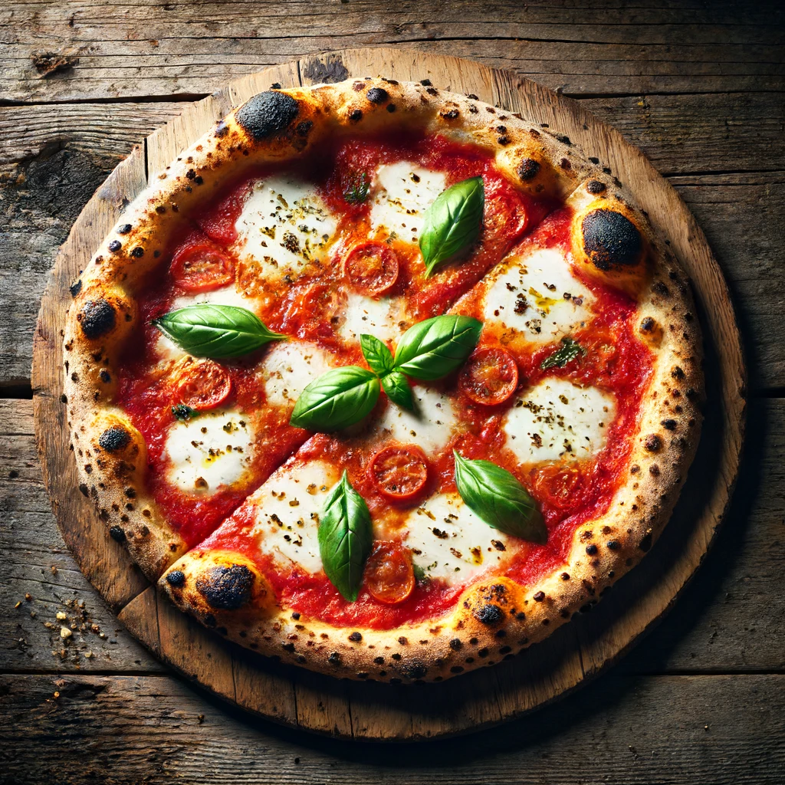

Traditional Napoletana Pizza Recipe Using Biga

The traditional Napoletana pizza made with biga features a light, airy crust with a slightly chewy texture and a crispy, golden-brown exterior. The biga, a pre-fermented dough, imparts a subtle depth of flavor and enhances the overall dough structure. The pizza is topped with a simple yet flavorful combination of San Marzano tomato sauce, fresh mozzarella cheese, fresh basil leaves, and a drizzle of extra virgin olive oil. The result is a beautifully balanced pizza with a harmonious blend of fresh, high-quality ingredients and a deliciously authentic taste.
Ingredients
For the biga
- 500g Italian "00" flour
- 220g water (44% hydration)
- 2g fresh yeast
For the dough
- 500g Italian "00" flour
- 300g water (60% hydration)
- 15g salt
- 3g fresh yeast
For the toppings
- 400g canned San Marzano tomatoes
- 250g fresh mozzarella cheese, sliced
- Fresh basil leaves
- Extra virgin olive oil
- Sea salt to taste
Instructions
Preparing the Biga
- Dissolve the fresh yeast in water.
- In a large bowl, mix the flour with the yeast-water mixture until a shaggy dough forms.
- Cover the bowl with plastic wrap and let it ferment at room temperature for 16-24 hours.
Preparing the Dough
- In a large mixing bowl, dissolve 3g of fresh yeast in 300g of water.
- Add the prepared biga to the water and mix until it breaks up and disperses in the water.
- Gradually add the 500g of "00" flour to the mixture, stirring until a dough begins to form.
- Add the salt and knead the dough until it becomes smooth and elastic, about 10-15 minutes by hand or 8-10 minutes with a stand mixer.
- Cover the dough and let it rest for 30 minutes.
- Divide the dough into 4 equal portions (about 250g each) and shape them into tight balls.
- Place the dough balls on a floured surface, cover with a damp cloth, and let them rise for 4-6 hours at room temperature.
Preparing the Sauce
- Crush the canned San Marzano tomatoes by hand or with a blender until you get a smooth consistency.
- Add a pinch of sea salt to taste. No need to cook the sauce.
Assembling and Baking the Pizza
- Preheat your oven to the highest temperature possible (250°C/482°F or higher if possible) and place a pizza stone or steel in the oven to heat up for at least 45 minutes.
- On a floured surface, take one dough ball and press it down with your fingers, gently stretching it into a 10-12 inch circle. Leave the edges slightly thicker for the crust.
- Transfer the stretched dough onto a floured pizza peel or parchment paper.
- Spread a thin layer of the tomato sauce over the dough, leaving about an inch around the edges.
- Distribute the sliced mozzarella cheese evenly over the sauce.
- Add a few fresh basil leaves on top.
- Drizzle a small amount of extra virgin olive oil over the pizza.
Baking
- Carefully slide the pizza onto the preheated pizza stone or steel in the oven.
- Bake for 7-10 minutes, or until the crust is golden brown and the cheese is bubbly and slightly charred.
- Remove the pizza from the oven and let it cool slightly before slicing.
Serving
- Drizzle a little more extra virgin olive oil on top of the pizza.
- Garnish with additional fresh basil leaves if desired.
- Serve hot and enjoy your authentic Napoletana pizza!